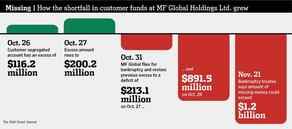

Anton Hagen is a multilingual writer from the UK whose joys and woes living in different parts of Europe inspired him to contribute philosophical pieces to the manosphere, with the odd caustic joke.


The hedonistic juggernaut that is modern society indulges all our physical needs: a plethora of luxury goods and services can satisfy each and every one of our sensual desires without hardship or sacrifice.
We can also engage in meaningless sexual intercourse with countless partners without the superfluous bothers of commitment, emotion, or children. It is a culture of excess we live in, and it does not seem to be slowing down anytime soon.
Some of us, however, can see the cracks forming, the ship’s exterior rattling ominously before the hull finally bursts open. There are warning signs occurring in our society which we simply cannot afford to ignore.
Everything will be fine… don’t be silly.
The omens we shall examine in this article will be in the sexual marketplace and the global economy. It is striking and uncanny to see the astonishing resemblances between the two systems, and the nature of the effects they are having on modern society as a whole.
A possible future for Western currencies?
The effects of the contraceptive pill and the emergence of dating websites can easily be likened to the consequences of fractional reserve banking and Richard Nixon taking the dollar off the gold standard in 1971.
Both assets (sex and money) have completely lost their intrinsic value as a result. For example, the American dollar could buy as much bread in 1800 as it could in 1900, but considerably less in 2000. Similarly, a bang is significantly less meaningful today than it was in 1900: it is certainly quick, fast, and a hell of a lot of fun, but ultimately has virtually no significance.
Society has experienced sexual and financial hyperinflation. Just like decadent Berlin in the bisexual, orgiastic frivolities of the late 1920s and the sky-high, hyperinflated Deutschmark, we have sunk to the same highs: although the fun might last a while longer, the risks will certainly not disappear by some miracle.
Sexual morality in the pre-Lady Chatterley era was implemented to enshrine risk as the lord and ruler: those who did not restrain themselves would incur risk onto themselves and society as a whole. Family tradition and commitment was respected to avoid sending civilization into debauchery and irresponsibility.
Many reluctantly acquiesced and repressed their sexual urges in favor of the family unit, only to feel the benefits later with loving relatives and offspring. The roles have now been completely inverted: the visible benefits now come first and foremost, while the risks are brushed under the bed, slowly growing and metastasizing into something ugly and devastating.
The fatal inversion of risk and reward can also be observed in bubble economies. Assets are artificially inflated in order to return an instant profit in exchange for credit, whilst the national debts which are used to fund such immoral economics increase, devaluing the currency and leaving the losses for our future generations to pay off.
The pedestalization of instantaneous reward has encouraged a predatory culture. In order to maintain a healthy living wage, we are forced to adopt a ludicrously fierce and unforgiving personality to hold a stable job, or even to get the job in the first place.
The same change of attitude is present in the sexual marketplace. There is no tolerance for even the slightest hint of beta behavior. None. We are forever one needy word too many in a text or an uncomfortable silence away from eternal celibacy.
A massive rift therefore develops in society. The rich become richer, the poor poorer, the alphas accumulate centuries of notches, the betas remain virgins into their late twenties; but this absolutely does not mean that we should turn to sexual and financial Socialism and propose an egalitarian system…
Thank God that we have been gifted with game and support from the manosphere to help manage our wealth the best we can, and also remain carnally satisfied. Without that, it is genuinely scary to contemplate a life at the bottom of the pile in both cases. It truly has become all or nothing.
A Ponzi scheme can be defined in economic terms as an investment in which a promise of profit is given to the newer shareholders, but then taken away from them in favor of the older, bigger investors when the scheme collapses in value.
The recent MF Global scandal was a key example: big businesses were given priority over individual accounts, therefore when it collapsed; the credit was seized from small accounts in favor of the larger investors (JP Morgan Chase being the most notable).

This definition can certainly be applied to the western woman. They whimsically throw out vague promises of commitment to thirsty betas (you’re a sweet guy etc.), whilst ecstatically blowing their investment (quite literally) on the cold, the emotionless and the superficially charming.
The way to overcome Ponzi schemes and Millennial Westerners is exactly the same: get in and get out as fast as possible. Investors who cling on in hope whilst the intrinsic value collapses are left with nothing, whilst those more adept speculators run away with all the spoils.
The situation does indeed sound dire, but knowledge makes both the sexual marketplace and the financial markets seem easier to handle, and even luridly attractive and enticing.
It is imperative that we know the pitfalls of both and skate around them carefully, whilst maintaining a strong frame and our dignity in the process. We must also bear in mind that the current financial and sexual climate simply cannot last: the economy and the demographic simply cannot support the unbearable excesses of the present.
But for the meantime, knowledge and action are the cornerstones to our temporary success in the modern world. Let us just hope that we shall be ready to adapt when change finally does happen.
Read More: The Father Of The Term “Sexual Marketplace”